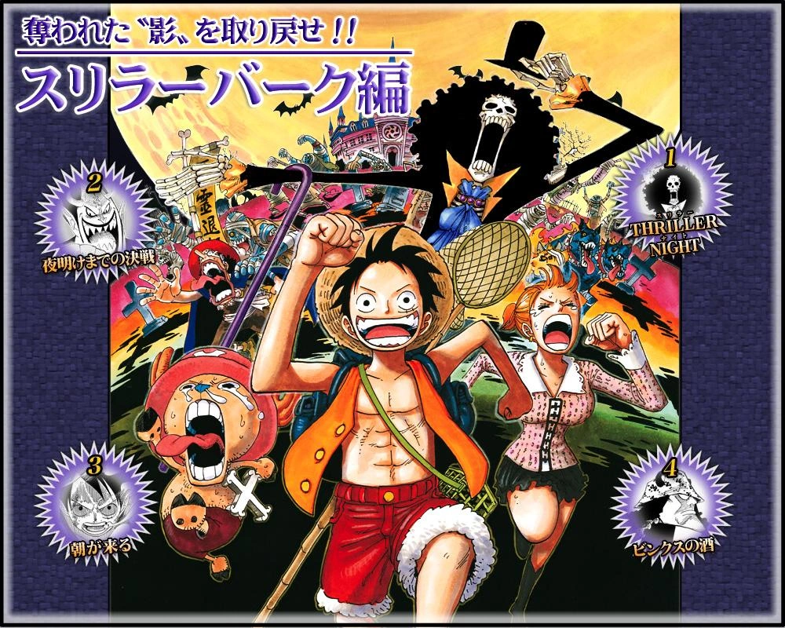

Sagas y Arcos
En 1999 arrancó la serie de anime de 'One Piece' para introducirnos a la historia de Monkey D. Luffy y su emocionante viaje para convertirse en el Rey de los Piratas. El anime ya lleva más de 1000 episodios divididos en arcos muy diferentes, e incluso algunos con episodios de relleno que podemos saltarnos, así que para no perdernos y saber dónde empieza cada parte de la historia aquí va una guía completa con todas las sagas que podemos encontrar en el anime de 'One Piece' hasta la fecha.
Saga del East blue
Aquí empieza toda la historia y vemos los inicios de lo que será la tripulación de los Sombrero de Paja, empezando con la primera aventura de Luffy y cuando comienza a formarse el grupo antes de partir al Grand Line.
Capitulos del 1 al 3
El arco de Romance Dawn, también conocido como el arco del Capitán Morgan, es el primer arco argumental de la Saga del East Blue del manga y anime japonés One Piece. Esta saga contiene tres historias en una. La primera es la historia de cómo Monkey D. Luffy ganó sus poderes, un poco de su infancia y su sueño de ser el Rey de los Piratas. La segunda historia es el encuentro con Koby y Alvida y en la última historia, Luffy intenta que el Cazador de Piratas, Roronoa Zoro, se una a su tripulación mientras se ocupan de la Marina y el capitán Mano de Hacha Morgan.
Capitulos del 4 al 8
El arco de Buggy «El Payaso», también conocido como el arco de la Ciudad Orange, es el segundo arco argumental de la saga del East Blue del popular manga y anime japonés One Piece. Monkey D. Luffy y Roronoa Zoro se enfrentan a los Piratas de Buggy para rescatar a una agobiada ciudad y sus habitantes del tirano capitán Buggy, y también conocen a su futura navegante, Nami.
Capitulos del 9 al 18
El Arco del Capitán Kuro, también conocido como el Arco de la Villa Syrup, es el tercer arco argumental de la Saga del East Blue del manga y anime japonés de One Piece. Monkey D. Luffy, Roronoa Zoro y Nami llegan a la Villa Syrup en busca de un barco y es ahí donde se encuentran con Usopp, el mentiroso local de la aldea. Esta vez los Piratas de Sombrero de Paja deben enfrentar y derrotar a Kuro y a sus Piratas Gato Negro, para salvar la vida de Kaya, la amiga de Usopp.

Capitulos del 19 al 30
El arco del Baratie, también conocido como el Arco de Don Krieg, es el cuarto arco argumental de la Saga del East Blue del popular manga y znime japonés de One Piece. Los Piratas de Sombrero de Paja se encuentran con Johnny y Yosaku, dos cazarrecompensas que son antiguos compañeros de Zoro. Ellos los dirigen al restaurante marítimo flotante Baratie una especie de oasis flotante en el medio del océano donde se encuentran con su futuro cocinero, Sanji. Después de una serie de acontecimientos, el considerado pirata más fuerte del East Blue, Don Krieg, fija su mirada en el Baratie para reemplazar a su gran flota de barcos que fue destrozada por el Señor de la Guerra del Mar Dracule Mihawk y así el destino del Restaurante Baratie esta en juego..

Capitulos del 31 al 44
El Arco de Arlong Park, también conocido como el Arco de Arlong, es el quinto arco argumental de la Saga del East Blue del popular manga y anime japonés de One Piece. Después de que Nami robara el Going Merry; Usopp, Roronoa Zoro y Johnny, y más tarde Monkey D. Luffy, Sanji y Yosaku, la siguen hasta la Villa Cocoyasi, hogar natal de Nami, gobernada por el tirano gyojin, Arlong. Es aquí donde el pasado y los motivos verdaderos del actuar raro de Nami salen a la luz. Los Sombreros de Paja conocerán la triste historia de Nami y lucharan por liberarla de su pasado. Este arco transcurre en las Islas Conomi.
Capitulos del 45 al 53
El arco de Loguetown es el sexto arco de la serie y el sexto y último arco argumental de la saga del East Blue. Los Piratas de Sombrero de Paja hacen una última parada para abastecerse antes de entrar a Grand Line, en la última isla del East Blue, Loguetown, lugar donde nació y fue ejecutado Gold Roger. Durante su estancia en esta isla se encontrarán con viejos enemigos y conocerán a dos personajes importantes en la serie: Dragon y Smoker.
Capitulos del 54 al 61
El arco del Dragón Milenario a veces llamado el arco de la isla Buque de Guerra o el arco de Apis, es un arco exclusivo del anime de One Piece. Además, este es el primer arco totalmente de relleno que no se basó en el contenido del manga de Eiichiro Oda.
Saga de Arabasta
Ya hemos entrado en el Grand Line y la banda sigue creciendo. Antes de continuar la búsqueda del One Piece, el grupo decide ayudar a la princesa Nefertari Vivi a detener la guerra civil que asola su país y detener a la banda de mercenarios conocida como Baroque Works.
Capitulos del 62 al 63
El arco de Reverse Mountain, también conocido como el Arco de Laboon, es el séptimo arco argumental del popular manga y anime japonés de la serie One Piece. Así mismo, es el primer arco argumental de la saga de Arabasta.
Los Piratas de Sombrero de Paja deberán atravesar la Reverse Mountain para entrar en Grand Line, sin embargo, se encontrarán con un singular obstáculo al entrar a Grand Line, dando comienzo de esta manera a su aventura en el "Cementerio de Piratas". Además, a pesar de ser muy corto, este arco es indispensable para que un nuevo miembro se una a la banda más adelante.
Los episodios relativos al arco fueron fuertemente editados y gran parte del arco fue completamente omitido en el doblaje de 4Kids. Como su nombre lo indica, este arco transcurre principalmente en la Reverse Mountain y los Cabos Gemelos, en Red Line.
Capitulos del 64 al 67
El arco de Whisky Peak es el octavo arco argumental del popular manga y anime japonés de la serie One Piece. Así mismo, es el segundo arco argumental de la saga de Arabasta.
Con un Log Pose ahora en mano, los Piratas de Sombrero de Paja se dirigen a Whisky Peak, una ciudad que acoge a los piratas con los brazos abiertos y los trata como celebridades. Obviamente, es demasiado bueno para ser verdad y los residentes de la ciudad son en realidad cazarrecompensas que pertenecen a una misteriosa organización que se convertirá en uno de los mayores enemigos de los Piratas de Sombrero de Paja.
Este arco transcurre principalmente en la isla de los Cactus, la primer ínsula visitada por los Sombreros de Paja en Grand Line.
Capitulos del 68 al 69
El Diario de Kobymeppo es la segunda minihistoria del manga de One Piece en donde vemos lo ocurrido con Koby y Helmeppo después de su encuentro con Luffy y Zoro.
Esta Minihistoria es una de las cuatro adaptadas al anime junto a la de las Aventuras de la Tripulación de Buggy, las Aventuras de Cada Uno de los Sombreros de Paja y el Hurra omnívoro de Wapol.
Capitulos del 70 al 77
El arco de Little Garden es el noveno arco argumental del manga y anime japonés de la serie One Piece. Así mismo, es el tercer arco argumental de la saga de Arabasta.
Little Garden es la segunda isla visitada por los Piratas de Sombrero de Paja en Grand Line. Es una isla de verano, que es despoblada salvo por los dinosaurios y los dos gigantes, Dorry y Brogy. Este arco fue dejado fuera del doblaje de 4Kids por causa de la violencia inevitable.
Capitulos del 78 al 91
El Arco de Drum es el décimo arco argumental del popular manga y anime japonés de la serie One Piece. Así mismo, es el cuarto arco argumental de la Saga de Arabasta.
Drum es la tercera isla visitada por los Piratas de Sombrero de Paja en el Grand Line, una isla con un crudo clima invernal. Durante este arco se introduce al futuro médico de los Piratas de Sombrero de Paja, al doctor Tony Tony Chopper, el cual conocen luego de que desviaran su rumbo hacia Arabasta para conseguir un médico que atendiera la fatal enfermedad de Nami.

Capitulos del 92 al 130
El arco de Arabasta es el décimo primer arco argumental del popular manga y anime japonés de la serie One Piece. Así mismo, es el quinto arco argumental de la saga de Arabasta.
Los Piratas de Sombrero de Paja llegan por fin, junto a Vivi y Karoo, al Reino de Arabasta, y comienzan su recorrido por el desierto para poder llegar a la ciudad de Alubarna, antes de que una guerra masiva estalle entre el Ejército Real y el Ejército Rebelde. Sin embargo el verdadero causante de la guerra, Mr.0 (el Guerrero del Mar Crocodile) y el resto de los agentes oficiales de Baroque Works harán todo lo posible para impedir que los Piratas de Sombrero de Paja y Vivi interfieran en su plan de conquistar Arabasta.
La Isla Sandy, donde se ubica el Reino de Arabasta, es la cuarta isla visitada por los Piratas de Sombrero de Paja en el Grand Line. El reino también es conocido como el Reino de la Arena, y está gobernado por el rey Nefertari Cobra, el padre de Nefertari Vivi.
Capitulos del 131 al 135
Son cinco episodios no canónicos de One Piece, estos episodios se centran principalmente en las historias y objetivos de los Piratas de Sombrero de Paja. Todos excepto Luffy y Robin reciben un episodio. Es posterior al arco de Arabasta.
Saga de Skypiea
La Saga de la Isla del Cielo es la tercera saga de One Piece. Los Piratas de Sombrero de Paja, esta vez visitan Jaya y posteriormente, Skypiea, una tierra misteriosa sobre las nubes. Sin embargo una vez allí se involucran en una guerra entre los Shandia y Enel, que amenaza con destruir Skypiea.
Tras los sucesos en Arabasta, Nico Robin se une a la tripulación y al final Nefertari Vivi decidió quedarse en su país. Un buque de cientos de años cayó del cielo y al descubrir muchas cosas en su interior y entonces deciden ir a la Isla del Cielo, Skypiea, cueste lo que cueste. Mientras tanto en el resto del mundo, algunos de los Siete Guerreros del Mar se reúnen con los altos mandos de la Marine para decidir el reemplazo de Crocodile, Ace conoció a Buggy, y Shanks envió un mensaje a Barbablanca.
Con la ayuda de Montblanc Cricket en Jaya, los Piratas de Sombrero de Paja consiguieron llegar a Skypiea, una isla en el cielo gobernada por un dios falso llamado Enel, que es posteriormente derrotado por Luffy.
Saga de Water Seven

También conocida como la Saga Enies Lobby o la Saga CP9. Tras dejar atrás la isla del Cielo, el Merry necesita reparaciones urgentemente, así que el siguiente paso en el viaje es encontrar un carpintero que se una a la tripulación... Aunque por el camino los Sombreros de Paja se ven envueltos en una feroz competición contra otra tripulación pirata y en la búsqueda de un antiguo tesoro perdido.
Capitulos del 207 al 219
El arco de Long Ring Long Land, también conocido como arco del Davy Back Fight o arco de Foxy, es el 14º arco y el 1º de la saga de Water 7 del manga y anime One Piece. Luego de caer de Skypiea los Piratas de Sombrero de Paja llegan a la isla de Long Ring Long Land. Lugar donde se centra un concurso entre los Piratas de Sombrero de Paja y los Piratas de Foxy, llamado el «Davy Back Fight». Es también el escenario de la lucha entre el almirante Aokiji y Monkey D. Luffy.
Capitulos del 220 al 224
El "Arco de Ocean's of Dream", es un arco exclusivo del anime, que narra como algo, les roba la memoria a los Piratas del Sombrero de Paja, y estos deben recuperar sus recuerdos para saber quienes son.
Capitulos del 225 al 226
El "Arco del Regreso de Foxy", es un arco exclusivo del anime. Relata lo que ocurrió con Foxy, y las consecuencias tras el Davy Back Fight en su tripulación.
Capitulos del 227 al 265
El arco de Water 7 es el décimo quinto arco y el segundo de la saga de Water 7. Water 7 es la séptima isla en la que los Piratas de Sombrero de Paja llegan en Grand Line. Se trata de una metrópolis de agua construida sobre una ciudad hundida anterior a ella. Todo parece ir bien para los Piratas de Sombrero de Paja hasta que una organización secreta, llamada CP9, se cruza en su camino.
Capitulos del 226 al 312
El Arco de Enies Lobby es el décimo sexto arco y el tercero de la Saga de Water 7 del manga y anime One Piece. Enies Lobby es la octava isla visitada por los Piratas de Sombrero de Paja en Grand Line. Este arco también parece ser un punto de avance para cada uno de los Piratas de Sombrero de Paja, ya que casi todos ellos de alguna manera se volvieron mas fuertes. En este arco, los de Sombrero de Paja también dicen adiós a su amado barco, el Going Merry.

Capitulos del 313 al 225
El arco del regreso a Water 7, también conocido como arco post-Enies Lobby o arco del Thousand Sunny, es el decimoséptimo arco de la serie y el cuarto y último de la saga de Water 7 en el manga y el anime de One Piece. Durante su estancia en Water 7, tras escapar exitosamente de Enies Lobby, los Piratas de Sombrero de Paja son visitados por la Marina. Unos días antes Ace al fin encuentra a Barbanegra y lucha contra él en la isla Banaro. En este arco Franky se une a los Piratas de Sombrero de Paja como el carpintero naval de abordo.
Saga de Thriller Bark
Antes de llegar al Nuevo Mundo, la tripulación deben navegar por un extraño mar donde es muy fácil perderse para siempre. Terminan siendo capturados en la isla de Thriller Bark, que está plagada de zombies y un nuevo villano quiere arrebatarles sus sombras.
Saga de La Guerra De Marineford
A esta saga también se la conoce como la Saga de la Cumbre de la Guerra, y marca el final de la primera parte del anime antes del salto temporal. Si ya las cosas se habían ido poniendo cada vez más difíciles, la tripulación se separa en medio de un conflicto que escala muy rápido.
Saga de Isla Gyojin
Tras un salto temporal de dos años, la tripulación de Luffy vuelve por fin a reunirse en el Archipiélago Sabaody para continuar su camino hacia el Nuevo Mundo... aunque antes deberán pasar por la isla de los hombres peces.
Saga de Dressrosa
Una de las sagas más largas de toda la historia y marca la entrada de lleno de los Piratas de Sombrero de Paja en el Nuevo Mundo. Es una región muy peligrosa donde nos encontramos con algunos de los piratas más feroces del Grand Line.
Capitulos del 575 al 578
El arco de la Ambición de Z es el décimo arco de relleno del anime de One Piece. Se trata del primer arco tras el salto temporal, y el segundo hecho para preparar una situación para una película de la serie, en este caso, One Piece Film Z.
Los Piratas de Sombrero de Paja llegan al Mar Maubeugemour, un sub-mar del Nuevo Mundo, donde entran en conflicto con la Marine y los Neo Marines.
Capitulos del 579 al 625
El Arco de Punk Hazard es el 26ª arco de la serie y el 1ª arco de la Saga de Dressrosa. Tras llegar al Nuevo Mundo, los Piratas de Sombrero de Paja reciben una llamada extraña de una isla cercana no detectable por el Log Pose llamada Punk Hazard. En la isla conocerán a Caesar Clown un antiguo científico del Gobierno Mundial que trabaja para los bajos fondos, es decir, para el misterioso "Joker". Volverán a ver al nuevo Señor de la Guerra del Mar, Trafalgar Law, quien ayudó a Luffy tras la Guerra de Marineford y harán una alianza para conseguir el SAD, una sustancia usada por "Joker" para hacer frutas del diablo artificiales. Para hacerlo tendrán que aliarse también con el vicealmirante Smoker, quien quiere detener al traidor del G-5, al Vicealmirante Vergo quien estaba, en realidad, a las órdenes de "Joker".
Capitulos del 626 al 628
El Arco del Rescate de Caesar es el undécimo arco de relleno, y el segundo tras el salto temporal.
En este arco, un misterioso personaje se las arregla para entrar en el Thousand Sunny y secuestrar a Caesar Clown. Antes de partir hacia Dressrosa, la Alianza de Los Piratas de Sombrero de Paja y los Piratas Heart deberán recuperar a Caesar de las manos del pirata Breed, con el fin de mantener el plan para acabar tanto con Donquixote Doflamingo como con Kaido.

Capitulos del 629 al 746
El arco de Dressrosa es el 27º arco del manga y anime One Piece, y el segundo arco de la Saga de Dressrosa. Sigue con la historia tras la huída de Punk Hazard después de los sucesos durante el Arco de Punk Hazard.
Saga de Whole Cake Island
Los Sombrero de Paja consiguen reunirse en Zou y empiezan a hacer los planes necesarios para enfrentarse a Kaidou. Sin embargo, Sanji cae en las garras de Big Mom, una peligrosa pirata y una de los Cuatro Emperadores, por lo que la tripulación tendrá que meterse de lleno en su territorio para rescatar al cocinero.
Capitulos del 747 al 750
El Arco de Silver Mine es el duodécimo arco No-Canon, y el tercero tras el salto temporal. Monkey D. Luffy y Bartolomeo serán secuestrados por la Asociación Pirata Silver y tendrán que ingeniárselas para escapar de una gran fortaleza de plata.
Capitulos del 751 al 779
El arco de Zou es el vigesimoctavo arco de la serie y el primero de la saga de Whole Cake Island.
Tras la derrota de Donquixote Doflamingo, los Piratas de Sombrero de Paja, Trafalgar Law y Kin'emon continúan su viaje hacia Zou para encontrarse con Sanji y los demás. Zou es la tercera isla que visitan los Piratas de Sombrero de Paja en el Nuevo Mundo.
Capitulos del 780 al 877
El arco de los Supernovas de la Marina es el trigésimo arco de relleno y el cuarto tras el salto temporal.Después de quedarse sin comida de camino a Whole Cake Island, el equipo de rescate de Sanji llega a una base de la Marina para robar un poco.

Capitulos del 783 al 877
El arco de Whole Cake Island, también conocido como arco de Totto Land es el vigesimonoveno arco de la serie y el segundo de la saga de Whole Cake Island. Supone la continuación de los sucesos acaecidos en el arco de Zou.
Tras ser informado de que Sanji decidió dirigirse voluntariamente a Whole Cake Island junto a Capone Bege con la intención de a casarse con una de las hijas de la familia Charlotte, Luffy decide partir hacia dicha isla guiado por Pekoms y un pequeño grupo de compañeros de tripulación y aliados mink. Su objetivo: recuperar a Sanji sin provocar un conflicto con una de los Cuatro Emperadores, Charlotte Linlin.
Saga del Pais De Wano
Ya hemos entrado en el Grand Line y la banda sigue creciendo. Antes de continuar la búsqueda del One Piece, el grupo decide ayudar a la princesa Nefertari Vivi a detener la guerra civil que asola su país y detener a la banda de mercenarios conocida como Baroque Works.
Capitulos del 878 al 889
El arco del Levely es el trigésimo arco de la serie y el primero de la saga del País de Wano. Supone la continuación de lo acontecido durante el arco de Whole Cake Island. Después de que el mundo supiese las acciones cometidas por los Piratas de Sombrero de Paja contra los Piratas de Big Mom, las familias reales de todo el mundo se reúnen para el Levely.
Capitulos del 895 al 896
El arco del rey del ácido carbónico es el decimocuarto arco de relleno del anime de One Piece y el quinto tras el salto temporal.

Capitulos del 897 al 906
El arco del País de Wano es el trigésimo primer arco de la serie y el segundo de la saga del País de Wano.
Capitulo 907
¡Veinte aniversario! - Especial Romance Dawn, referido más concretamente como Romance Dawn es el episodio 907 del anime de One Piece, así como adaptación especial de TV del segundo one-shot titulado Romance Dawn, un predecesor de One Piece.

Capitulos del 908 al 1028
ELas noticias vuelan dentro y fuera del País de Wano: Las facciones se preparan
De vuelta en el País de Wano, Tama se curó de sus heridas en la casa de Tenguyama Hitetsu junto a Chopper y los doctores minks, mientras que Inuarashi se enfrentó a Shutenmaru en la base de los bandidos, acabando en un empate. Kin'emon intentó hablar con el anterior Ashura Doji, pero éste le dijo que en el pasado sólo servía a Kozuki Oden y por lo tanto no le debía nada a su familia, y que no serían capaces de llenar el vacío que dejaron en el país por tantos años. En Onigashima, base de los Piratas de las Bestias, King y Queen, los otros dos «desastres», regañaron e insultaron a Jack por la bajada de impuestos recaudados en Kuri, mientras éstos dos se insultaban también entre sí.
Capitulos del 1029 al 1030
El arco del pasado de Uta es el decimoquinto arco exclusivo del anime de One Piece, aún sin tener una contraparte en el manga se le considera un arco canon.
Capitulos del 1031 en Adelante
Llega el día de la batalla: La promesa no cumplida
Luego de que Kin'emon diera unos últimos ánimos a sus aliados y se marcharan los Piratas de Sombrero de Paja consiguieron unas armadura gracias a Tenguyama Hitetsu mientras esperaban para que llegara el día, hablando Nami con los minks sobre la posibilidad de convertirse en sulong para la batalla. De mientras pueblo Okobore fue interrogado por Holed'em debido al ininterrumpido robo de sus suministros. Tsuru salió en defensa al pensar que su marido era el responsable, por lo que los Piratas de las Bestias destruyeron el pueblo.